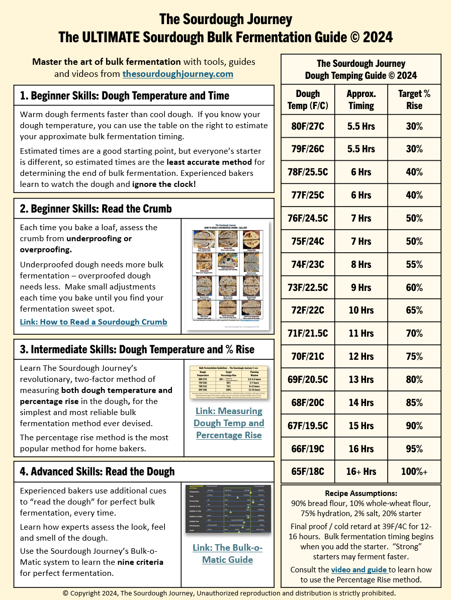

Home
Sourdough bread

Sourdough bread recipe derived from Alexandra cooks
Ingredients
- Sourdough starter 100g
- Water 375g
- Wheat flour 75g
- Bread flour 425g
- Salt 12g
Steps
- Whisk the starter, salt water together then add the flours
- Sit for 30 minutes then perform a 4 sets of stretch and folds
- Let bulk ferment according to chart
- Shape into a proofing basket and proof in the refrigerater overnight
- With a dutch oven in your oven, preheat the ovean to 290 celsius for 1 hour
- Transfer the loaf out of the proofing basket into parchment paper and set into the dutch oven
- Bake for 30 minutes with the lid and 20 minutes without the lid
